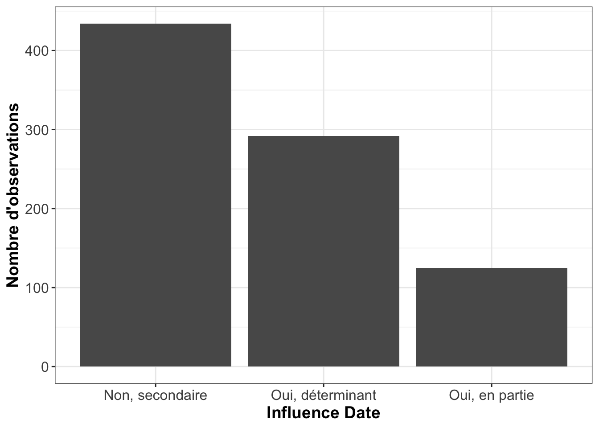
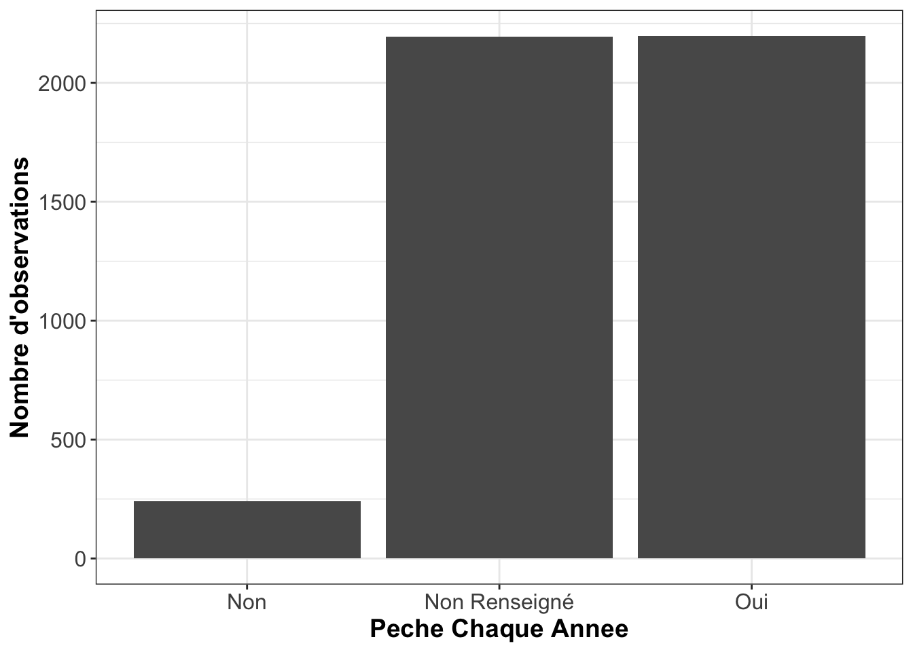
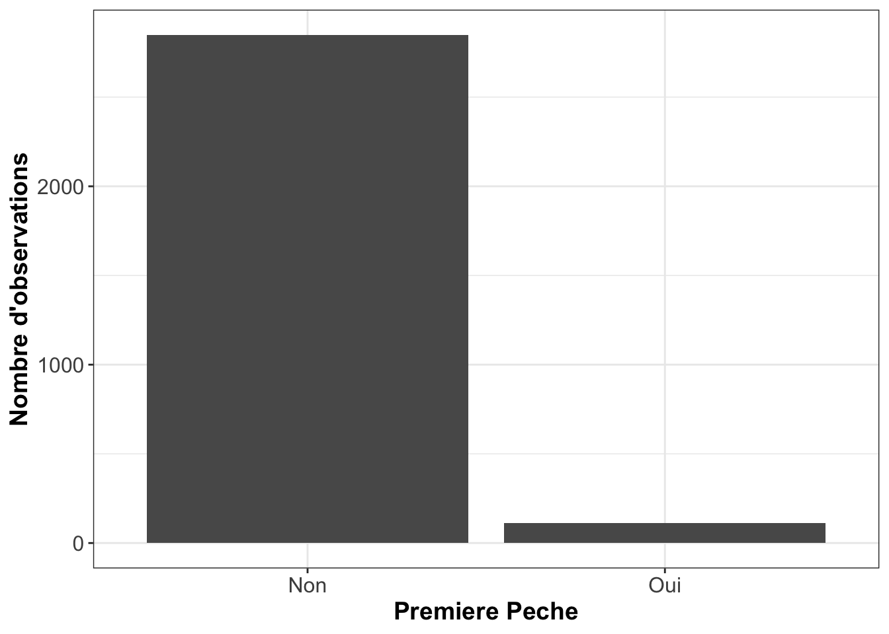
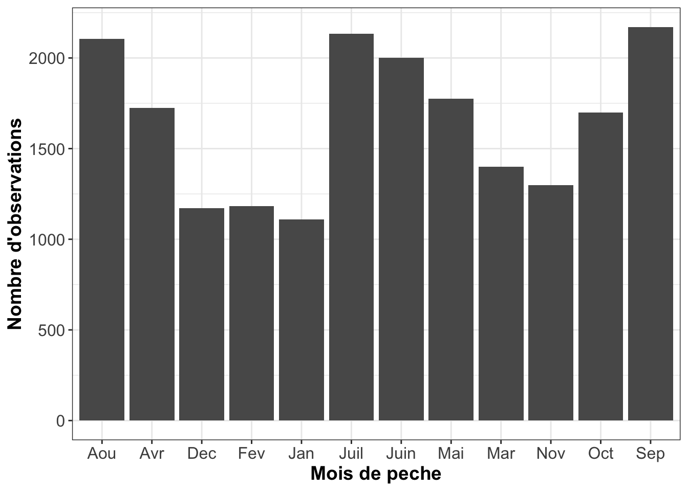
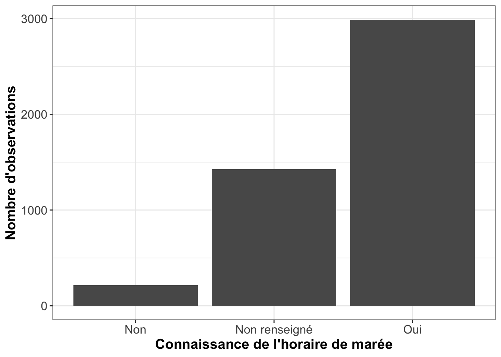
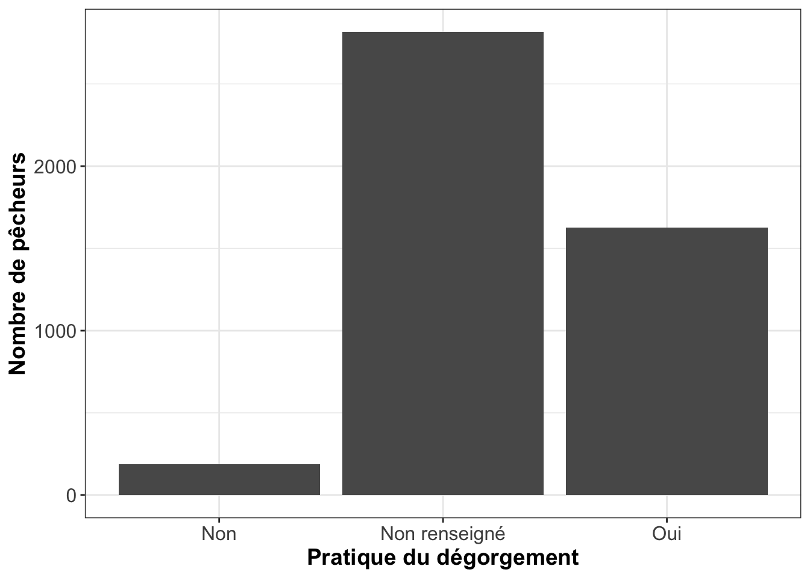
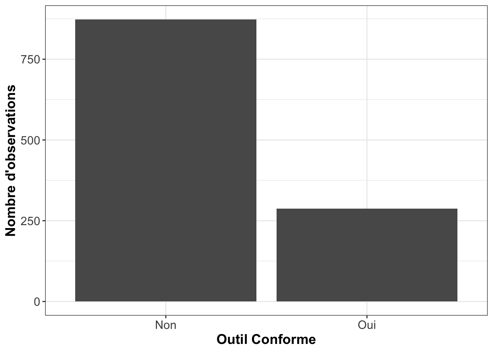
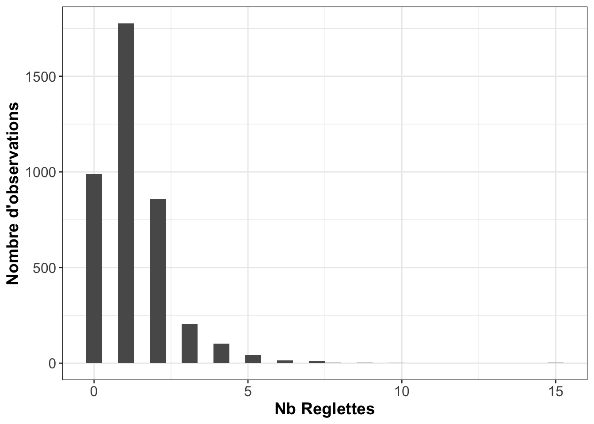
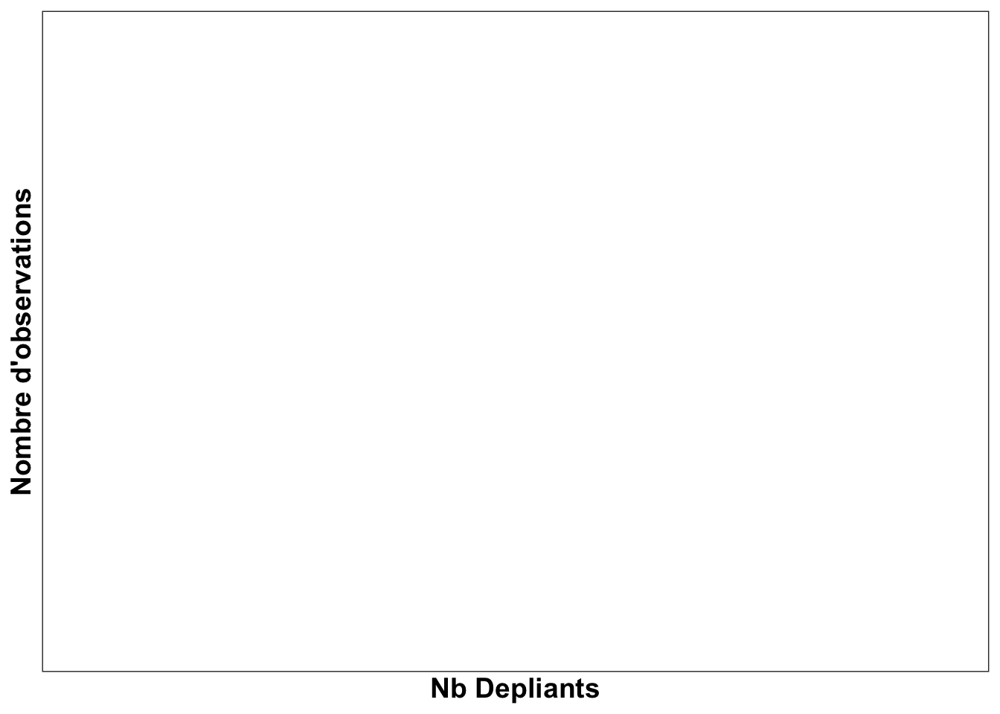

ESTAMP : Synthèse des résultats des données d’usage de la zone intertidale
Echelle de l’Observatoire PAP
Etienne Patin
21/04/2020
Ce document a pour but de confronter l’analyse des comptages et des enquêtes de la pèche à pied aux données de la base de données ESTAMP. Plusieurs rapports furent analysés pour cerner les éléments essentiels à la constitution d’un rapport. L’étude de la base donnée ESTAMP va permettre d’informer l’état des données pour chaque élément constitutif des rapports.
Le plan est tiré de la Trame Rapport de diagnostic de la pêche de loisir sur le territoire
Evaluation quantitative de l’activité de pêche à pied – Les comptages
L’étude de la base de données ESTAMP ne comprends pas les comptages, l’analyse de cette partie n’est pas effectuée.
Evaluation qualitative de l’activité de pêche à pied – Les enquêtes
Une méthodologie issue du projet LIFE « Pêche à pied de loisir »
Le questionnaire
Rapports : [1] ; [2] ; [3] ; [4] ; [5] ; [6]
Cette partie permet de connaitre le questionnaire utilisé pour les enquêtes. La version du questionnaire est citée et les changements, suppression de questions sont expliqués quand c’est le cas.
Les données sont bancarisées dans le jeu de données « ficheterrain », dans la variable « version protocole » et « type protocole ».
Etat des données :
- version protocole:
- Nombre d’observation : 6293
- Taux de remplissage : 87.04%
- Commentaire : très grande diversité de modalité signe d’une utilisation de plusieurs protocoles. Cependant il existe plusieurs modalités pour un type de protocole (ex : Qlife2 ; QLife2)
- type protocole:
- Nombre d’observations :7230
- Taux de remplissage : 100%
| version protocole | n |
|---|---|
| AAMP_GNB_09-04-2014 | 13 |
| AAMP_GNB_14-03-2014 | 65 |
| AAMP_GNB_20_05_2014 | 30 |
| IODDE_2013 | 9 |
| LIFE_06_06_2014 | 283 |
| LIFE_23_09_2015 | 486 |
| LifePAP | 1534 |
| Q2 | 101 |
| Q8bis | 3 |
| Q8bis_20150813 | 2 |
| Q8bis_20150813-1 | 68 |
| Q8bis_201508130 | 2 |
| QLife1 | 121 |
| Qlife2 | 128 |
| QLife2 | 48 |
| Qlife3 | 534 |
| QLittorea complet | 598 |
| QLittorea intermédiaire | 300 |
| QLittorea simplifié | 167 |
| QlittOuest22_V03.2014 | 147 |
| QlittOuest22_V06.2014 | 400 |
| QlittOuest22_Vrecolte06.2016 | 231 |
| QlittOuest22_Vrecolte07.2015 | 319 |
| QlittOuest22_Vsensib2015 | 704 |
| type protocole | n |
|---|---|
| Enquête complète | 5218 |
| Enquête sensibilisation | 2012 |
Objectifs et calendrier
Rapports : [2] ; [3] ; [4] ; [5] ; [6]
Les actions de l’organisme pour mener ces enquêtes sont décrites dans cette partie. Elle n’a pas d’interaction avec la Base de données ESTAMP.
Résultats d’enquêtes
Accueil réservé aux enquêteurs
Rapports : [1] ; [2] ; [3] ; [4] ; [5] ; [6]
Cet élément est soit une sous partie ou est simplement inséré dans la conclusion de « résultats d’enquêtes ».
Les données sont bancarisées dans le jeu de données « enquête_detail », dans la variable « Accueil ».
Etat des données :
- Nombre d’observations : 3274
- Taux de remplissage : 45.28%
Différents types d’accueil
Part des pêcheurs sensibilisés
Rapports : [3]
Les données sont bancarisées dans le jeu de données « enquête_preparation_peche », dans la variable « Pecheur Sensibilisé ».
Etat des données :
- Nombre d’observations : 6165
- Taux de remplissage : 85.27%

Part des pêcheurs sensibilisés
Profils des pêcheurs enquêtés
Sexe ratio
Rapports : [1] ; [2] ; [3] ; [4] ; [5]
Les résultats sont des pourcentages avec des modalités Femme ou Homme. Une autre peut aussi être rencontrée, il s’agit de la modalité « enfant ».
Les données sont bancarisées dans le jeu de données « enquête_details », dans la variable « Sexe pêcheurs » mais aussi dans la variable « Sexe – autre membre ».
Etat des données :
- Sexe pêcheurs
- Nombre d’observations : 3801
- Taux de remplissage : 52.57%
- Sexe – autre membre
- Nombre d’observations : 2308
- Taux de remplissage : 31.92%

Répartition des pêcheurs selon leur sexe
Constitution du groupe
Rapports : [1] ; [2] ; [3] ; [4] ; [5]
Les données sont bancarisées dans le jeu de données « préparation_pêche », dans la variable « Constitution Groupe ».
L’analyse reprend les modalités de la base de données :
- En famille
- Pêcheur seul
- En couple
- En groupe d’amis
Etat des données :
- Nombre d’observations : 4330
- Taux de remplissage : 59.89%
Constitution des groupes de pêcheur
Catégories socio-professionnelles des pêcheurs rencontrés
Rapports : [5]
Les données sont bancarisées dans le jeu de données « enquête_detail », dans la variable « CSP – Pécheur ».
Etat des données :
- Nombre d’observations : 4631
- Taux de remplissage : 64.05%
- Commentaire : forte diversité de modalité
| CSP - Pécheur | n |
|---|---|
| 0_Non Renseigné | 2189 |
| 1_Agriculteurs exploitants | 36 |
| 2_Artisans, commerçants et chefs d’entreprise | 70 |
| 3_Cadres et professions intellectuelles supérieures | 109 |
| 4_Professions Intermédiaires | 213 |
| 5_Employés | 153 |
| 6_Ouvriers | 109 |
| 7_Retraités | 1627 |
| 8_Autres personnes sans activité professionnelle | 125 |
Graphique des différentes catégories socio-profesionnelles des pêcheurs
Classe d’âge/expérience
Rapports : [1] ; [2] ; [3] ; [4] ; [5] ; [6]
Les résultats sont traités de différentes manières.
Elles sont soit réparties en plusieurs classes d’âge (soit par tranche de 15 ans, soit par tranche de 10 ans…). Certains rapports n’utilisent que la moyenne comme résultats.
Les données sont bancarisées dans le jeu de données « enquête_details », dans la variable « année naissance – Pêcheur » et dans la variable « année naissance – Autre membre ».
Etat des données :
- Année naissance – Pêcheur
- Nombre d’observations : 3618
- Taux de remplissage : 50.04%
- Moyenne : 1957.39
- Minimum : 1921
- Maximum : 2003
- Année naissance – Autre membre
- Nombre d’observations : 2138
- Taux de remplissage : 29.57%
- Moyenne : 1969.59
- Minimum : 1921
- Maximum : 2014
## Warning: Ignoring unknown parameters: binwidth, bins, pad## geom_path: Each group consists of only one observation. Do you need to adjust
## the group aesthetic?
## geom_path: Each group consists of only one observation. Do you need to adjust
## the group aesthetic?
Graphique représentant la diversité d’âge des pêcheurs
Origine géographique
Rapports : [1] ; [2] ; [3] ; [4] ; [5] ; [6]
Les données sont bancarisées dans le jeu de données « enquête détails », il y a plusieurs possibilités pour le choix de variable :
- « Commune résidence »
- « Départements »
- « Pays »
Etat des données :
- Commune résidence :
- Nombre d’observations : 3232
- Taux de remplissage : 44.7%
- Départements
- Nombre d’observations : 0
- Taux de remplissage : 0%
- Pays
- Nombre d’observations : 0
- Taux de remplissage : 0%
| Département | n |
|---|
Distribution des pêcheurs dans l’Hexagone
Pour les non-résidents de cette partie du littoral
Type de séjour et type d’hébergement pour les non-résidents
Rapports : [3]
Les données sont bancarisées dans le jeu de données « enquête détails », dans la variable « Hébergement ».
Etat des données :
- Nombre d’observations : 427
- Taux de remplissage : 5.91%
Graphique illustrant les différents types d’hébergements pour les pêcheurs non-résidents
Fréquentation du littoral
Rapports : [3]
Les données sont bancarisées dans le jeu de données « enquête_details », dans la variable « Durée séjour ». Etat des données :
- Nombre d’observations : 1140
- Taux de remplissage : 15.77%
- Moyenne : 14.25
- Minimum : 1
- Maximum : 240
## `stat_bin()` using `bins = 30`. Pick better value with `binwidth`.## Warning: Removed 6090 rows containing non-finite values (stat_bin).Graphique de la durée de séjour sur le littoral
Influence de la pratique de pêche à pied sur choix du site et des dates de séjour
Rapports : [3] ; [6]
Les données sont bancarisées dans le jeu de données « enquête_details », dans la variable « influence destination ».
Etat des données :
- Nombre d’observations : 1128
- Taux de remplissage : 15.6%
Graphique illustrant si la pratique de pêche à pied a une influence sur le choix de destination ou non
Premier Séjour
Les données sont bancarisées dans le jeu de données « enquête_details », dans la variable « Premier Séjour ».
Etat des données :
- Nombre d’observations :4631
- Taux de remplissage : 64.05%
 ##### Influence Date
##### Influence Date
Les données sont bancarisées dans le jeu de données « enquête_details », dans la variable « Influence Date ».
Etat des données :
- Nombre d’observations : 851
- Taux de remplissage : 11.77%

Connaissance du site
Rapports : [6]
Il n’y a pas de données sur ESTAMP qui puissent répondre à cette
Habitudes et pratiques de pêche (espèces pêchées et engins utilisés)
Milieux de pêche prospectés
Rapports : [1] ; [3] ; [5]
Cet élément est rempli par les observateurs locaux des enquêtes, ils se basent essentiellement sur leur connaissance du terrain. Mais des données sont disponible sur ESTAMP.
Les données sont bancarisées dans le jeu de données « enquête_pratique-peche », dans la variable « Milieu(x) ».
Etat des données :
- Nombre d’observations : 1931
- Taux de remplissage : 26.71%
- Commentaires : plusieurs modalités dans une observation. Elles sont séparées par |.
| Milieu(x) | n |
|---|---|
| Champs de blocs | 266 |
| Concessions de culture | 13 |
| Cuvettes de sédiments | 350 |
| Flaques rocheuses | 123 |
| Gisement d’huitres | 39 |
| Herbiers zostères | 136 |
| Massifs d’hermelles | 89 |
| Moulières | 87 |
| Roche nue | 256 |
| Sables battus | 318 |
| Sables grossiers et graviers | 436 |
| Sables vaseux | 330 |
| Vasières | 2 |
Graphique illustrant le nombre de pêcheur par milieu
Espèces ciblées + outils utilisés
Rapports : [1] ; [2] ; [3] ; [4] ; [5]
Certains rapports veulent le nombre d’espèces recherchés par pécheur.
Les données sont bancarisées dans le jeu de données « enquête_pratique_peche », dans la variable « Espèces » pour les espèces ciblées, dans la variable « Outils ou technique » pour les outils utilisés.
Etat des données :
- Espéces
- Nombre d’observations : 4349
- Taux de remplissage : 60.15%
- Commentaires : plusieurs modalités dans une observation. Elles sont séparées par |.
- Outils ou technique
- Nombre d’observations : 4213
- Taux de remplissage : 58.27%
- Commentaires : plusieurs modalités dans une observation. Elles sont séparées par |.
Expérience de pêche
Rapports : [2] ; [3]
Les données sont bancarisées dans le jeu de données « enquête_pratique_peche », dans la variable « Année Premiere Peche ».
Etat des données :
- Nombre d’observations : 2116
- Taux de remplissage : 29.27%
- Moyenne : 1982.22
- Minimum : 1933
- Maximum : 2016
Nombre de pêcheur par année d’expérience
Motivation du pécheur
Rapports : [5]
Les données sont bancarisées dans le jeu « enquête_pratique_peche », dans la variable « Motivation(s) ».
Etat des données :
- Nombre d’observations : 1575
- Taux de remplissage : 21.78%
- Commentaires : plusieurs modalités dans une observation. Elles sont séparées par |.
| Motivation(s) | n |
|---|---|
| Convivialité | 270 |
| Gratuité des produits | 231 |
| Habitude/Tradition | 241 |
| Paysage et bon air | 1019 |
| Plaisir : aspect ludique | 572 |
| Qualité des produits | 746 |
| Recherche/gratuité d’appâts | 14 |
Nombre de pêcheurs par motivations invoquées pour la pratique de pêche à pied
Autres pratiques de pêche
Rapports : [2] ; [3] ; [5]
Les données sont bancarisées dans le jeu de données « enquête_pratiques_peche », dans la variable « Autres types de pêche ».
Etat des données :
- Nombre d’observations : 4631
- Taux de remplissage :64.05%
| Autres types de peche | n |
|---|---|
| Aucune autre pêche | 3902 |
| Du bord : Chasse sous-marine | 104 |
| Du bord : Ligne | 327 |
| Eaux douces | 135 |
| En bateau : Chasse sous-marine | 4 |
| En bateau : Engins dormants | 18 |
| En bateau : Ligne | 350 |
Autres sites fréquentés
Rapports : [2] ; [3]
Les données sont bancarisées dans le jeu de données « enquête_pratiques_peche », dans la variable « Autres Sites Fréquentés », la variable « Départements » et la variable « Noms sites ».
Etat des données :
- Départements
- Nombre d’observations : 173
- Taux de remplissage : 2.39%
- Commentaires : plusieurs modalités dans une observation. Elles sont séparées par |.
- Autres sites fréquentés
- Nombre d’observations : 4631
- Taux de remplissage : 64.05%
- Noms sites :
- Nombre d’observations : 828
- Taux de remplissage : 11.45%
- Commentaires : grande diversité de format d’écriture pour les noms de sites (sigle, en toutes lettres…) et une grande diversité de séparation de modalité au sein d’une observation.
| Départements | n |
|---|---|
| Charente-Maritime | 18 |
| Finistère | 148 |
| Hérault | 2 |
| Loire-Atlantique | 3 |
| Manche | 7 |
| Seine-Maritime | 8 |
Critères de choix de la marée
Rapports : [2] ; [3] ; [5]
Les rapports n’utilisent pas tous la même analyse, certains rapports se concentre sur le coefficient de marée, quant à d’autres se basent plus sur les réponses du questionnaire
Les données sont bancarisées dans le jeu de données « enquête_pratique_peche », dans la variable « Coefficient Maree Mini » ou dans la variable « Choix des marées ».
Etat des données :
- Coefficient Maree Mini
- Nombre d’observations : 2382
- Taux de remplissage : 32.95%
- Moyenne : 81.57
- Minimum : 20
- Maximum : 114
- Choix des marées
- Nombre d’observations : 1558
- Taux de remplissage : 21.55%
- Commentaires : plusieurs modalités dans une observation. Elles sont séparées par “|”.

Nombre de pêcheurs selon le coefficient minimum pour aller pêcher
| Choix des marées | n |
|---|---|
| Lorsque la météo favorable | 432 |
| N’importe quel jour de la semaine | 407 |
| Uniquement aux grandes marées | 818 |
| Uniquement en week-end/vacances | 515 |
Critère de choix de site
Rapports : [2] ; [3]
Les données sont bancarisées dans le jeu de données « enquête_preparation_peche », dans la variable « Critères choix site ».
Etat des données :
- Nombre d’observations : 2286
- Taux de remplissage : 31.62%
- Commentaires : plusieurs modalités dans une observation. Elles sont séparées par |.
| Critéres choix site | n |
|---|---|
| Accessibilité (parkings …) | 95 |
| Autre activité ou opportunisme | 13 |
| Autre critère | 15 |
| Fidélité | 939 |
| Improvisé ou par hasard (non choix) | 70 |
| Proximité | 1077 |
| Qualité gisement | 485 |
| Recommandation | 332 |
| Tranquillité | 23 |
Fréquence de pratique de pêche
Rapports : [2] ; [3]
Les données sont bancarisées dans le jeu de données « enquête_pratique_peche », dans la variable « Frequence Declaree Peche ».
Plusieurs variables « fréquence » existent dans les différents jeux de données de la Base ESTAMP, « Frequence Declaree Peche » semble correspondre le plus à cet élément.
Etat des données :
- Frequence de la pratique de la pêche
- Nombre d’observations : 138
- Taux de remplissage : 1.91%
- Moyenne : 0.57
- Minimum : 0.0666667
- Maximum : 1
- Peche chaque annee
- Nombre d’observations : 4631
- Taux de remplissage : 64.05%
- Premiere pêche
- Nombre d’observations : 2960
- Taux de remplissage : 40.94%
- Nombre pêche an
- Nombre d’observations : 1764
- Taux de remplissage : 24.4%
- Moyenne : 8.5
- Minimum : 0
- Maximum : 365
Fréquence de la pratique de la pêche


## Warning: Removed 5466 rows containing non-finite values (stat_bin).
Coefficient minimum de pêche
Rapports : [2] ; [5] ; [6]
Les données sont bancarisées dans le jeu de données « enquête_pratique_peche », dans la variable « Coefficient marée Mini ».
Etat des données :
- Nombre d’observations : 2382
- Taux de remplissage : 32.95%
- Moyenne : 81.57
- Minimum : 20
- Maximum : 114
Nombre de pêcheurs selon le coefficient minimum pour aller pêcher
Période de fréquentation du site
Rapports : [2] ; [3] ; [5] ; [6]
Les données sont bancarisées dans le jeu de données « enquête_pratique_peche », dans la variable « Mois de peche ». Etat des données :
- Nombre d’observations : 2791
- Taux de remplissage : 38.6%
- Commentaires : plusieurs modalités dans une observation. Elles sont séparées par |.
| Mois de peche | n |
|---|---|
| Aou | 2106 |
| Avr | 1724 |
| Dec | 1171 |
| Fev | 1184 |
| Jan | 1110 |
| Juil | 2134 |
| Juin | 2001 |
| Mai | 1775 |
| Mar | 1399 |
| Nov | 1299 |
| Oct | 1700 |
| Sep | 2170 |

Connaissance du pêcheur
Renseignement et source d’information sur l’heure de la marée
Rapports : [1] ; [3] ; [4] ; [5] ; [6]
L’origine des données n’est qu’une supposition :
Les données sont possiblement bancarisées dans le jeu de données « enquête_preparation_peche », dans la variable « Source d’information ».
Etat des données :
- Annuaire de marée
- Nombre d’observations : 4631
- Taux de remplissage : 64.05%
- Commentaires : plusieurs modalités dans une observation. Elles sont séparées par |.

| Source d’information | n |
|---|---|
| Annuaire des marées | 3 |
| Aucune | 2221 |
| Bouche à oreille (autres pêcheurs, entourage, magasins, structures professionnelles …) | 67 |
| Capitainerie / Club Nautique / Préfecture / Affaires maritimes / Mairies | 74 |
| Culture locale / habitude | 25 |
| Internet / Applications mobiles | 101 |
| Médias (journaux, radios, tv) | 209 |
| Ne sait plus | 1 |
| Panneau d’information/affichage | 122 |
| Professionnels du tourisme | 38 |
Renseignement et source d’information sur l’aspect sanitaires du site
Rapports : [1] ; [2] ; [3] ; [4] ; [5] ; [6]
Les renseignements utilisent deux variables.
Les données sont bancarisées dans le jeu de données « enquête_preparation_peche », dans la variable « Etat Sanitaire » et dans la variable « Source d’information ».
Etat des données :
- Etat Sanitaire :
- Nombre d’observations : 4631
- Taux de remplissage : 64.05%
- Source d’information
- Nombre d’observations : 2861
- Taux de remplissage : 39.57%
- Commentaires : plusieurs modalités dans une observation. Elles sont séparées par |.
Graphique illustrant la connaissance ou non de l’état sanitaire
| Source d’information | n |
|---|---|
| Annuaire des marées | 3 |
| Aucune | 2221 |
| Bouche à oreille (autres pêcheurs, entourage, magasins, structures professionnelles …) | 67 |
| Capitainerie / Club Nautique / Préfecture / Affaires maritimes / Mairies | 74 |
| Culture locale / habitude | 25 |
| Internet / Applications mobiles | 101 |
| Médias (journaux, radios, tv) | 209 |
| Ne sait plus | 1 |
| Panneau d’information/affichage | 122 |
| Professionnels du tourisme | 38 |
Connaissance et source d’information de la réglementation
Rapports : [1] ; [2] ; [3] ; [4] ; [5] ; [6]
Plusieurs variables de la base ESTAMP sont utilisées pour cet analyse.
Les données sont bancarisées dans le jeu de données « enquete_connaissance_peche », dans les variables :
- « Connaissance réglementation »
- « Connaissance quotas »
- « Connaissance Période »
- « Source d’information »
- « Informé Législation »
- « Déclaration connaissance »
- « Périodes déclarées »
- « Connaissance réglementation période »
- « Source d’information législation »
Etat des données :
- Connaissance réglementation
- Nombre d’observations : 3465
- Taux de remplissage : 47.93%
- Connaissance quotas
- Nombre d’observations : 3223
- Taux de remplissage : 44.58%
- Connaissance période
- Nombre d’observations : 0
- Taux de remplissage : 0%
- Source d’information
- Nombre d’observations : 2247
- Taux de remplissage :31.08%
- Commentaires : plusieurs modalités dans une observation. Elles sont séparées par |.
- Informé Législation
- Nombre d’observations : 4631
- Taux de remplissage : 64.05%
- Périodes déclarées
- Nombre d’observations : 0
- Taux de remplissage : 0%
- Connaissance réglementation période
- Nombre d’observations : 0
- Taux de remplissage : 0%
- Source information législation
- Nombre d’observations : 2247
- Taux de remplissage : 31.08%
Graphique indiquant la connaissance des pêcheurs sur la période pêche
Graphique la connaissance des pêcheurs sur les quotas de pêche
Graphique la connaissance des pêcheurs sur les quotas de pêche
| Source d’information | n |
|---|---|
| Annuaire des marées | 3 |
| Aucune | 2221 |
| Bouche à oreille (autres pêcheurs, entourage, magasins, structures professionnelles …) | 67 |
| Capitainerie / Club Nautique / Préfecture / Affaires maritimes / Mairies | 74 |
| Culture locale / habitude | 25 |
| Internet / Applications mobiles | 101 |
| Médias (journaux, radios, tv) | 209 |
| Ne sait plus | 1 |
| Panneau d’information/affichage | 122 |
| Professionnels du tourisme | 38 |
Graphiques indiquant l’état d’information sur la législation par les pêcheurs
Graphiques indiquant l’état de connaissance sur la réglementation de période pour la pêche à pied
Adhésion à une association
Rapports : [1] ; [3]
Les données sont bancarisées dans le jeu de données « enquete_connaissance_pecheur », dans la variable « Membre Association ».
Etat des données :
- Membre association :
- Nombre d’observations : 4631
- Taux de remplissage : 64.05%
- Nom Association :
- Nombre d’observations : 81
- Taux de remplissage : 1.12%
Nombre de pêcheurs adhérent à une association
| Nom Association | n |
|---|---|
| A3PF | 1 |
| AAPMA Morlaix | 1 |
| AAPPMA | 1 |
| AAPPMA D’Incheville | 2 |
| AAPPMA Ile et Vilaine | 1 |
| AC stella | 1 |
| AFMAN | 4 |
| AFMAN -BGSCF | 1 |
| AFMAN Fort Mahon | 1 |
| AMC | 1 |
| Amicale pêcheurs Blériotais | 1 |
| ANA Onival | 1 |
| APLB boulogne | 1 |
| apld dk | 1 |
| APPB | 1 |
| APPB Binic | 1 |
| APPL | 1 |
| APPPVD Pléneuf | 1 |
| APVL rivière | 1 |
| ASPMB | 1 |
| asso pêche étang | 1 |
| asso rivière authie | 1 |
| AvelMor (à Santec. responsable) | 1 |
| Binic | 4 |
| ccpp | 1 |
| Club nautique Onival | 1 |
| club pêcheurs ault | 1 |
| club ste gabriel | 1 |
| cpp | 1 |
| Dauphins boulonais | 1 |
| DPLA Ambleteuse | 1 |
| eau douce | 3 |
| en création | 1 |
| hippocampe | 1 |
| l’espérance | 2 |
| La goule Nantaise | 1 |
| la touquetine | 2 |
| LATP | 3 |
| Les sternes Berck | 1 |
| Lorient | 1 |
| marins d’Ambleteuse | 1 |
| Marsoins boulonnais | 1 |
| Marsoins de Calais | 1 |
| Marsouins | 1 |
| pêcheurs de Lille | 1 |
| Pêcheurs Sportifs Léonard | 1 |
| Pêcheurs sportifs léonards | 1 |
| plaisance ault | 1 |
| plaisancier cote opale pr tracteur | 1 |
| plaisancier d’Audingghan | 2 |
| plaisancier d’Audinghen | 1 |
| Plaisanciers de Carantec | 1 |
| Port Etaple | 1 |
| Porteloise | 2 |
| rivière | 1 |
| Santec | 1 |
| Société de pêche | 2 |
| Surf Casting Club Equihen | 1 |
| surf casting equihen | 1 |
| TPLA | 1 |
| tréport | 1 |
| truite canche | 1 |
| Wimereux | 2 |
| Yacht club du Tréport | 1 |
Pratique du dégorgement
Rapports : [1] ; [2]
Les données sont bancarisées dans le jeu de données « enquete_connaissance_pecheur », dans la variable « Conseils consommation ».
Etat des données :
- Nombre d’observations : 4631
- Taux de remplissage : 64.05%

Utilisation d’un outil de mesure
Rapports : [1] ; [2] ; [3] ; [4] ; [5]
Plusieurs variables de la base ESTAMP sont utilisées pour cet analyse.
Les données sont bancarisées dans le jeu de données « enquete_connaissance_pecheur », dans la variable « Utilisation outil » et dans la variable « Source outil ».
Etat des données :
- Utilisation outil
- Nombre d’observations :4034
- Taux de remplissage : 55.8%
- Source outil
- Nombre d’observations : 3692
- Taux de remplissage : 51.07%
- Outil conforme
- Nombre d’observations :1161
- Taux de remplissage : 16.06%
Nombre de pêcheur utilisant un outil de mesure
| Source outil | n |
|---|---|
| Anatomique (phalange, largeur de paume, pouce…) | 160 |
| Artisanal | 849 |
| Aucun outil | 1829 |
| Autre type de réglette | 42 |
| Campagne de sensibilisation | 471 |
| Commerce | 260 |
| Pied à coulisse FNPPSF | 39 |
| Reglette LIFE | 42 |

Source d’information
Rapports : [2] ; [4] ; [5]
Les données sont bancarisées dans le jeu de données « enquête_connaissance_pecheur », dans la variable « Source d’information législation ».
Etat des données :
- Nombre d’observations : 2247
- Taux de remplissage : 31.08%
| Source d’information | n |
|---|---|
| Annuaire des marées | 3 |
| Aucune | 2221 |
| Bouche à oreille (autres pêcheurs, entourage, magasins, structures professionnelles …) | 67 |
| Capitainerie / Club Nautique / Préfecture / Affaires maritimes / Mairies | 74 |
| Culture locale / habitude | 25 |
| Internet / Applications mobiles | 101 |
| Médias (journaux, radios, tv) | 209 |
| Ne sait plus | 1 |
| Panneau d’information/affichage | 122 |
| Professionnels du tourisme | 38 |
Analyse des paniers/pêche du jour
Constitution du panier
Rapports : [1] ; [2] ; [3] ; [4] ; [5] ; [6]
Les données sont bancarisées dans le jeu de données « enquête_peche_jour », dans la variable « poids recolte », dans la variable « Espece », dans la variable « Nb individus », dans la variable « Panier vide » et dans « Poids maille ».
Etat des données :
- Espèce
- Nombre d’observations : 3847
- Taux de remplissage : 53.21%
- Nb individus
- Nombre d’observations : 2238
- Taux de remplissage : 30.95%
- Moyenne : 35.48
- Minimum : 1
- Maximum : 1509
- Poids récolte
- Nombre d’observations : 1644
- Taux de remplissage : 22.74%
- Moyenne : 2474.01
- Minimun : 0.07406
- Maximun : 1.610^{6}
- Commentaires : Données anormales soit trop importantes, soit petites
- Panier vide
- Nombre d’observations : 6165
- Taux d’observations : 85.27%
| Espece | n |
|---|---|
| Amande de mer | 18 |
| Arénicoles | 46 |
| Autres crabes (appâts uniquement et découverte) | 1 |
| Bigorneaux | 213 |
| Bouquet commun | 24 |
| Coques | 906 |
| Coquille Saint-Jacques | 2 |
| Couteaux | 113 |
| Crabe vert d’Europe, crabe enragé | 37 |
| Crevettes | 190 |
| Etrille | 129 |
| Homard | 10 |
| Huître creuse | 105 |
| Huître plate | 11 |
| Lançons | 2 |
| Lutraires | 29 |
| Moules | 517 |
| Ormeaux | 6 |
| Palourdes | 1018 |
| Patelles | 21 |
| Pétoncles | 6 |
| Praire | 340 |
| Raies | 1 |
| Spisule, Mactre solide | 38 |
| Tellines | 7 |
| Tourteau | 24 |
| Troque épaisse | 1 |
| Vernis | 15 |
| Vers annélides | 10 |
| Vers tubes | 7 |
Nombre de d’individus pêchés par pêcheurs
Poids de récolte par pêcheur
Nombre panier vide
Analyse de la conformité
Rapports : [1] ; [3] ; [4] ; [5]
Cette sous partie n’est pas toujours remplie ou alors mixée avec la partie précédente. Elle représente souvent qu’une seule phrase avec un pourcentage de conformité. Les données pouvant répondre à ces analyses sont possiblement bancarisées dans le jeu de données « enquête_peche_jour », dans la variable « Conformité maille » et/ou dans la variable « Conformité quantité ».
Etat des données :
- Conformité maille
- Nombre d’observations : 588
- Taux de remplissage : 8.13%
- Conformité quantité
- Nombre d’observations : 0
- Taux de remplissage : 0%
Nombre de pêcheurs ayant un panier conforme pour la maille
Nombre de pêcheurs ayant un panier conforme pour la quantité
Temps de pêche moyen
Rapports : [1] ; [2] ; [3] ; [4] ; [5] ; [6]
Les données sont bancarisées dans le jeu de données « enquête_peche_jour », dans la variable « Temps total Peche ».
Etat des données :
- Nombre d’observations : 3236
- Taux de remplissage : 44.76%
- Moyenne : 102.02
- Minimum : 4
- Maximum : 300
## Warning: Removed 3994 rows containing non-finite values (stat_bin).Temps de pêche moyen
Estimation des prélèvements
Il y a peu de rapports qui ont rempli cette partie, leur démarche n’est pas expliquée. Il est donc difficile si des données de la base de données ESTAMP sont utilisés et si oui, lesquelles.
Périodes privilégiées de pêche
Peu de rapports développent cette partie. Cependant un rapport semble utiliser les données dans le jeu « enquête_pratique_peche », dans la variable « Choix des marées ».
Etat des données :
- Nombre d’observations : 1558
- Taux de remplissage :21.55%
- Commentaires : plusieurs modalités dans une observation. Elles sont séparées par |.

Qualité de la récolte
Les rapports n’ont pas développé cette partie.
Attitudes des pécheurs à pied face aux enquêteurs
Réceptivité des pécheurs face aux conseils promulgués
Rapports : [1] ; [3] ; [4] ; [5]
Les données sont bancarisées dans le jeu « enquête_detail », dans la variable « Sensibilisation ».
Etat des données :
- Nombre d’observations : 3173
- Taux de remplissage : 43.89%
Reception des pêcheurs face aux conseils promulgués
Tri des récoltes
Rapports : [1] ; [3] ; [4] ; [5]
Les données sont bancarisées dans le jeu « enquête_preparation_peche », dans la variable «Tri du panier».
Etat des données :
- Nombre d’observations : 0
- Taux de remplissage : 0%
Tri des récoltes
Réglettes et flyers distribués
Les données sont bancarisées dans le jeu « enquête_preparation_peche », dans la variable «Nb Reglettes» et dans la variable «Nb Depliants». Etat des données :
- Nb Reglettes
- Nombre d’observations : 4005
- Taux de remplissage : 55.39%
- Moyenne : 1.24
- Minimum : 0
- Maximum : 15
- Nb Depliants
- Nombre d’observations :0
- taux de remplissage : 0%
- Moyenne : NaN
- Minimum :
- Maximum : -
## `stat_bin()` using `bins = 30`. Pick better value with `binwidth`.## Warning: Removed 3225 rows containing non-finite values (stat_bin).
## `stat_bin()` using `bins = 30`. Pick better value with `binwidth`.## Warning: Removed 7230 rows containing non-finite values (stat_bin).
Conclusion
Bibliographie :
[1] Rapport de diagnostic de la pêche de loisir sur le territoire de Guissény
[2] Bilan des actions sur le territoire du Pays de Morlaix
[3] Rapport de diagnostic de la pêche à pied de loisir sur le territoire Côtes d’Armor lot numero 5 2018
[4] Rapport de diagnostic de la pêche à pied de loisir dans l’Ouest des Côtes d’Armor
[5] Rapport de diagnostic de la pêche à pied de loisir sur les territoires de la Rance et de la Côte d’Emeraude 2018
[6] Etat des lieux de la pêche à pied de loisir / Bilan d’actions 2015-2017 / CPIE LOIRE OCEANE
Annexes
| Commune résidence | n |
|---|---|
| ABBEVILLE | 6 |
| AGON COUTAINVILLE | 8 |
| AIGUEPERSE | 1 |
| AILLY SUR NOYE | 1 |
| AISEREY | 1 |
| AIX NOULETTE | 2 |
| ALBERTVILLE | 4 |
| ALBI | 1 |
| ALENCON | 5 |
| ALLENAY | 3 |
| ALLOUAGNE | 1 |
| AMBLETEUSE | 12 |
| AMIENS | 16 |
| ANDEL | 2 |
| ANGERS | 10 |
| ANICHE | 1 |
| ANNECY | 5 |
| ANNEVILLE SUR MER | 2 |
| ANTONY | 1 |
| ANTRAIN | 2 |
| ARGENTAN | 4 |
| ARMENTIERES | 1 |
| ARON | 6 |
| ARRAS | 5 |
| ASPACH LE BAS | 5 |
| AUBE | 1 |
| AUBIGNE RACAN | 1 |
| AUBIGNY EN ARTOIS | 3 |
| AUCHEL | 1 |
| AUDEMBERT | 1 |
| AUDINGHEN | 4 |
| AULT | 10 |
| AUMALE | 1 |
| AVESNES LE COMTE | 1 |
| AVIGNON | 1 |
| AVON | 1 |
| AVORD | 1 |
| AVRANCHES | 22 |
| BAGNEUX | 2 |
| BAGNOLET | 2 |
| BAILLEUL | 1 |
| BAINCTHUN | 1 |
| BAUDRE | 3 |
| BEAUCE LA ROMAINE | 1 |
| BEAUCOUDRAY | 1 |
| BEAUVAIS | 3 |
| BEGARD | 1 |
| BELLE ISLE EN TERRE | 5 |
| BERTANGLES | 2 |
| BESANCON | 9 |
| BETHENCOURT SUR MER | 1 |
| BETHUNE | 13 |
| BETTENCOURT RIVIERE | 1 |
| BETTON | 7 |
| BEUGIN | 1 |
| BILLY BERCLAU | 4 |
| BINIC ETABLES SUR MER | 12 |
| BLAINVILLE SUR MER | 8 |
| BLENDECQUES | 4 |
| BOHARS | 2 |
| BOLAZEC | 6 |
| BONDY | 1 |
| BONNINGUES LES ARDRES | 1 |
| BONNINGUES LES CALAIS | 1 |
| BONO | 2 |
| BORDEAUX | 19 |
| BOTMEUR | 1 |
| BOUCHAIN | 3 |
| BOULOGNE SUR MER | 41 |
| BOURBRIAC | 6 |
| BOURG ACHARD | 1 |
| BOURG BLANC | 2 |
| BOURGES | 1 |
| BOURSEUL | 1 |
| BOUSIGNIES SUR ROC | 1 |
| BRAY DUNES | 2 |
| BRECEY | 3 |
| BREHAL | 6 |
| BRESLES | 2 |
| BREST | 93 |
| BRESTOT | 3 |
| BRETTEVILLE SUR AY | 1 |
| BRETTEVILLE SUR ODON | 1 |
| BREVILLE SUR MER | 2 |
| BRIEC | 2 |
| BRUAY LA BUISSIERE | 2 |
| BRUAY SUR L ESCAUT | 2 |
| BRUSVILY | 1 |
| CAEN | 28 |
| CALAIS | 49 |
| CALLAC | 1 |
| CAMBLAIN CHATELAIN | 1 |
| CAMBRAI | 6 |
| CAMBRIN | 2 |
| CAMBRON | 1 |
| CAMIERS | 3 |
| CAMON | 1 |
| CANCALE | 5 |
| CARANTEC | 34 |
| CARHAIX PLOUGUER | 8 |
| CAROLLES | 7 |
| CAUDRY | 3 |
| CAYEUX SUR MER | 4 |
| CEFFONDS | 4 |
| CESSON SEVIGNE | 1 |
| CHABLIS | 3 |
| CHALONS EN CHAMPAGNE | 3 |
| CHAMBERY | 2 |
| CHAMPEAUX | 14 |
| CHAMPSECRET | 4 |
| CHANTEPIE | 1 |
| CHARTRES | 14 |
| CHATEAU GONTIER | 3 |
| CHATEAUFORT | 2 |
| CHATEAUNEUF DU FAOU | 2 |
| CHATEAUNEUF SUR LOIRE | 2 |
| CHAUMONT | 2 |
| CHAUMONT SUR THARONNE | 4 |
| CHAUVRY | 1 |
| CHEFFES | 2 |
| CHERBOURG EN COTENTIN | 3 |
| CHERRUEIX | 2 |
| CHOLET | 1 |
| CLEDER | 7 |
| CLOHARS CARNOET | 2 |
| COAT MEAL | 1 |
| COETMIEUX | 1 |
| COGLES | 1 |
| COHINIAC | 7 |
| COIGNEUX | 2 |
| COMINES | 2 |
| COMMANA | 1 |
| COMPIEGNE | 2 |
| CONCARNEAU | 1 |
| CONDE EN NORMANDIE | 1 |
| CONDE SUR L ESCAUT | 1 |
| CONDECOURT | 3 |
| CONDETTE | 5 |
| CONTEVILLE | 1 |
| CORPS NUDS | 1 |
| CORSEUL | 1 |
| COUDEVILLE SUR MER | 2 |
| COULOGNE | 2 |
| COURRIERES | 1 |
| COURTILS | 3 |
| COUTANCES | 8 |
| CREANCES | 5 |
| CREHEN | 3 |
| CROZON | 2 |
| CUCQ | 4 |
| CUGUEN | 1 |
| DAMPMART | 3 |
| DANNES | 1 |
| DAOULAS | 2 |
| DEAUVILLE | 2 |
| DESVRES | 6 |
| DIEPPE | 5 |
| DIJON | 1 |
| DINAN | 22 |
| DIRINON | 3 |
| DOMFRONT EN POIRAIE | 1 |
| DONVILLE LES BAINS | 3 |
| DOUAI | 8 |
| DOURGES | 1 |
| DRAGEY RONTHON | 10 |
| DREUX | 1 |
| DUCEY LES CHERIS | 2 |
| DUNKERQUE | 9 |
| DURTAL | 7 |
| ELENCOURT | 2 |
| ENVERMEU | 4 |
| EPERLECQUES | 1 |
| EQUIHEN PLAGE | 6 |
| ERQUY | 7 |
| ESTAIRES | 1 |
| ETAPLES | 23 |
| EU | 2 |
| EVRON | 3 |
| FACHES THUMESNIL | 1 |
| FECAMP | 3 |
| FERQUES | 2 |
| FEUQUIERES EN VIMEU | 2 |
| FLERS | 7 |
| FLEURY | 1 |
| FLEURY SUR ANDELLE | 1 |
| FONTAINEBLEAU | 2 |
| FORMERIE | 3 |
| FORT MAHON PLAGE | 10 |
| FOS SUR MER | 4 |
| FOUESNANT | 4 |
| FOUGERES | 25 |
| FOUILLOY | 1 |
| FREHEL | 1 |
| FRENCQ | 1 |
| FRESSENNEVILLE | 2 |
| FRETHUN | 1 |
| FRIAUCOURT | 4 |
| FRICOURT | 1 |
| FRIVILLE ESCARBOTIN | 5 |
| GAMACHES | 1 |
| GARLAN | 2 |
| GAVRAY | 1 |
| GEFFOSSES | 1 |
| GENETS | 2 |
| GENNEVILLIERS | 4 |
| GORRON | 2 |
| GOUDELIN | 6 |
| GOUESNOU | 2 |
| GOUVILLE SUR MER | 5 |
| GRAND COURONNE | 1 |
| GRANDCAMP MAISY | 1 |
| GRANVILLE | 19 |
| GRAVELINES | 2 |
| GRENOBLE | 15 |
| GUEMPS | 4 |
| GUERLESQUIN | 6 |
| GUICHEN | 2 |
| GUICLAN | 2 |
| GUILERS | 4 |
| GUIMAEC | 2 |
| GUINES | 5 |
| GUINGAMP | 10 |
| GUIPAVAS | 20 |
| GUISSENY | 3 |
| HALLINES | 1 |
| HARNES | 1 |
| HAUBOURDIN | 4 |
| HAUTEVILLE | 4 |
| HAZEBROUCK | 1 |
| HENIN BEAUMONT | 1 |
| HENON | 1 |
| HENVIC | 4 |
| HERBLAY | 1 |
| HERICOURT | 4 |
| HESDIN L ABBE | 2 |
| HEUGUEVILLE SUR SIENNE | 1 |
| HILLION | 2 |
| HORNAING | 2 |
| HUDIMESNIL | 3 |
| HUELGOAT | 4 |
| ILE DE BATZ | 2 |
| ISIGNY SUR MER | 1 |
| ISQUES | 1 |
| JAVRON LES CHAPELLES | 2 |
| JEUMONT | 2 |
| JUGON LES LACS COMMUNE NOUVELLE | 3 |
| JULLOUVILLE | 7 |
| JUZIERS | 3 |
| KERLOUAN | 2 |
| L ISLE ADAM | 2 |
| LA BAULE ESCOUBLAC | 1 |
| LA CAPELLE LES BOULOGNE | 2 |
| LA CHAPELLE HEULIN | 4 |
| LA CHAUSSEE TIRANCOURT | 1 |
| LA FERTE MACE | 1 |
| LA FEUILLEE | 1 |
| LA FLECHE | 3 |
| LA FOREST LANDERNEAU | 4 |
| LA GARENNE COLOMBES | 1 |
| LA GORGUE | 1 |
| LA HAYE | 8 |
| LA MEZIERE | 1 |
| LA RICHARDAIS | 2 |
| LA ROCHELLE | 3 |
| LACROIX ST OUEN | 2 |
| LAGNY | 2 |
| LAMBALLE | 21 |
| LANARVILY | 3 |
| LANCE | 1 |
| LANCIEUX | 2 |
| LANCON PROVENCE | 5 |
| LANDEDA | 1 |
| LANDEHEN | 2 |
| LANDERNEAU | 10 |
| LANDES | 1 |
| LANDIVISIAU | 29 |
| LANESTER | 2 |
| LANGUENAN | 2 |
| LANMEUR | 10 |
| LANNILIS | 1 |
| LANNION | 33 |
| LANRIVOARE | 2 |
| LANTIC | 2 |
| LANVELLEC | 1 |
| LANVOLLON | 6 |
| LAVAL | 7 |
| LE CELLIER | 3 |
| LE CONQUET | 1 |
| LE CROTOY | 2 |
| LE FAOU | 2 |
| LE FOLGOET | 1 |
| LE HAVRE | 23 |
| LE MANS | 7 |
| LE MENE | 6 |
| LE MERZER | 1 |
| LE MESNIL RAINFRAY | 2 |
| LE MONT ST MICHEL | 3 |
| LE PALAIS | 1 |
| LE PERREUX SUR MARNE | 1 |
| LE PLESSIS LASTELLE | 1 |
| LE PORTEL | 20 |
| LE RELECQ KERHUON | 31 |
| LE TAMPON | 1 |
| LE TOUQUET PARIS PLAGE | 8 |
| LE VIEUX MARCHE | 1 |
| LEERS | 3 |
| LEHON | 1 |
| LENS | 5 |
| LES PIEUX | 2 |
| LESNEVEN | 12 |
| LESSAY | 1 |
| LEZARDRIEUX | 2 |
| LHERAULE | 3 |
| LICQUES | 3 |
| LIEVIN | 5 |
| LILLE | 32 |
| LILLEBONNE | 1 |
| LINGREVILLE | 4 |
| LISIEUX | 2 |
| LOCQUENOLE | 5 |
| LOCQUIREC | 18 |
| LOGUIVY PLOUGRAS | 1 |
| LOLIF | 2 |
| LONGCHAMP | 2 |
| LOOS | 2 |
| LORRIS | 1 |
| LOUCHES | 1 |
| LOUDEAC | 9 |
| LOUVIERS | 1 |
| LUCEAU | 6 |
| LUMBRES | 1 |
| LYON 01 | 10 |
| LYS LEZ LANNOY | 1 |
| MACON | 1 |
| MAEL CARHAIX | 1 |
| MAISNIERES | 1 |
| MAISNIL | 1 |
| MAISONS ALFORT | 1 |
| MARCK | 3 |
| MARCQ EN BAROEUL | 1 |
| MARQUETTE LEZ LILLE | 1 |
| MARQUISE | 20 |
| MARSEILLE 10 | 10 |
| MATHAUX | 2 |
| MATIGNON | 5 |
| MAUBEUGE | 1 |
| MAXENT | 1 |
| MAYENNE | 7 |
| MEDREAC | 4 |
| MERLIMONT | 2 |
| METEREN | 2 |
| METZ | 9 |
| METZING | 1 |
| MILIZAC | 2 |
| MILLY LA FORET | 2 |
| MINGOVAL | 1 |
| MINIHY TREGUIER | 10 |
| MITTAINVILLIERS VERIGNY | 1 |
| MOLIERES | 1 |
| MONCONTOUR | 3 |
| MONS BOUBERT | 1 |
| MONTARGIS | 2 |
| MONTAUBAN | 2 |
| MONTEREAU FAULT YONNE | 2 |
| MONTERFIL | 2 |
| MONTFORT SUR MEU | 1 |
| MONTOURS | 1 |
| MONTPELLIER | 2 |
| MONTREUIL | 1 |
| MONTSENELLE | 1 |
| MOON SUR ELLE | 1 |
| MORDELLES | 5 |
| MORLAIX | 86 |
| MORTAIN BOCAGE | 1 |
| MUNEVILLE LE BINGARD | 1 |
| MUR DE BRETAGNE | 1 |
| NANTES | 10 |
| NEUFCHATEL HARDELOT | 1 |
| NEVERS | 3 |
| NIBAS | 2 |
| NIEPPE | 1 |
| NIEURLET | 1 |
| NIMES | 1 |
| NIVELLE | 1 |
| NOEUX LES MINES | 1 |
| NOGENT LE ROTROU | 9 |
| NOUMEA | 4 |
| NOUVION | 1 |
| NOYERS ST MARTIN | 1 |
| OFFRETHUN | 1 |
| ORCHIES | 1 |
| ORGERES | 1 |
| ORLEANS | 3 |
| OUST MAREST | 1 |
| OUTREAU | 16 |
| PAIMPOL | 51 |
| PAIMPONT | 12 |
| PECQUENCOURT | 1 |
| PEDERNEC | 2 |
| PENDE | 3 |
| PENVENAN | 2 |
| PERIERS | 3 |
| PERROS GUIREC | 25 |
| PIROU | 5 |
| PLABENNEC | 6 |
| PLAINTEL | 3 |
| PLANCOET | 11 |
| PLANGUENOUAL | 1 |
| PLEBOULLE | 2 |
| PLEDELIAC | 3 |
| PLEDRAN | 1 |
| PLEHEDEL | 3 |
| PLEINE FOUGERES | 1 |
| PLELAN LE GRAND | 1 |
| PLELAN LE PETIT | 8 |
| PLELO | 3 |
| PLENEE JUGON | 2 |
| PLENEUF VAL ANDRE | 18 |
| PLERIN | 14 |
| PLESLIN TRIGAVOU | 2 |
| PLESTAN | 3 |
| PLESTIN LES GREVES | 9 |
| PLEUMEUR BODOU | 15 |
| PLEYBER CHRIST | 18 |
| PLOEMEUR | 1 |
| PLOERMEL | 2 |
| PLOEUC L HERMITAGE | 2 |
| PLONEVEZ DU FAOU | 1 |
| PLOUARET | 4 |
| PLOUARZEL | 6 |
| PLOUBALAY | 4 |
| PLOUBAZLANEC | 23 |
| PLOUBEZRE | 1 |
| PLOUDALMEZEAU | 7 |
| PLOUDANIEL | 2 |
| PLOUEC DU TRIEUX | 3 |
| PLOUEGAT GUERAND | 1 |
| PLOUENAN | 11 |
| PLOUESCAT | 6 |
| PLOUEZEC | 52 |
| PLOUEZOC H | 4 |
| PLOUFRAGAN | 11 |
| PLOUGASNOU | 22 |
| PLOUGASTEL DAOULAS | 31 |
| PLOUGONVELIN | 7 |
| PLOUGONVEN | 7 |
| PLOUGOULM | 13 |
| PLOUGUENAST | 1 |
| PLOUGUERNEAU | 20 |
| PLOUGUIN | 1 |
| PLOUHA | 10 |
| PLOUIDER | 1 |
| PLOUIGNEAU | 43 |
| PLOUISY | 4 |
| PLOULEC H | 1 |
| PLOUMILLIAU | 1 |
| PLOUNERIN | 2 |
| PLOUNEVEZ LOCHRIST | 1 |
| PLOURAC H | 2 |
| PLOURIN | 2 |
| PLOURIN LES MORLAIX | 6 |
| PLOURIVO | 15 |
| PLOUVIEN | 2 |
| PLOUVORN | 2 |
| PLOUZANE | 12 |
| PLUDUAL | 2 |
| PLUFUR | 3 |
| PLUMAUGAT | 1 |
| PLURIEN | 16 |
| PLUSSULIEN | 2 |
| POINTEL | 1 |
| POITIERS | 1 |
| PONT DE L ARCHE | 1 |
| PONT PEAN | 1 |
| PONTORSON | 3 |
| PONTRIEUX | 2 |
| PONTS ET MARAIS | 1 |
| PORDIC | 3 |
| PORT ST PERE | 1 |
| PORTBAIL | 1 |
| POSES | 1 |
| POULLAOUEN | 2 |
| PULNOY | 1 |
| QUEND | 10 |
| QUESSOY | 3 |
| QUESTEMBERT | 1 |
| QUETTREVILLE SUR SIENNE | 2 |
| QUEVEN | 12 |
| QUIMPER | 1 |
| QUINTIN | 4 |
| RAMBOUILLET | 1 |
| RANG DU FLIERS | 3 |
| REDON | 2 |
| REFFUVEILLE | 1 |
| REIMS | 4 |
| RENNES | 51 |
| RETY | 6 |
| RILLIEUX LA PAPE | 1 |
| RINXENT | 5 |
| ROANNE | 1 |
| ROCQUEMONT | 2 |
| ROGNAC | 3 |
| ROISSY EN FRANCE | 1 |
| ROMAGNY FONTENAY | 1 |
| ROMORANTIN LANTHENAY | 4 |
| ROSCOFF | 19 |
| ROSTRENEN | 1 |
| ROUEN | 20 |
| ROYE | 1 |
| ROZ SUR COUESNON | 1 |
| RUE | 3 |
| RULLY | 4 |
| RUNGIS | 1 |
| SAILLY LABOURSE | 1 |
| SALLES DE BARBEZIEUX | 1 |
| SAMER | 3 |
| SANGATTE | 3 |
| SANNOIS | 1 |
| SANTEC | 53 |
| SARREBOURG | 1 |
| SARTILLY BAIE BOCAGE | 8 |
| SARTROUVILLE | 1 |
| SAUMUR | 1 |
| SAUSSET LES PINS | 1 |
| SIBIRIL | 6 |
| SIZUN | 3 |
| SOUGEAL | 1 |
| SOULIGNONNE | 1 |
| SOURDEVAL | 7 |
| ST ALBAN | 14 |
| ST AMAND LES EAUX | 4 |
| ST AUBIN DU PERRON | 1 |
| ST BERTHEVIN | 1 |
| ST BRANDAN | 3 |
| ST BRIAC SUR MER | 1 |
| ST BRIEUC | 51 |
| ST BROLADRE | 1 |
| ST CAST LE GUILDO | 9 |
| ST CHAMAS | 1 |
| ST DENIS LE VETU | 1 |
| ST DIVY | 1 |
| ST EBREMOND DE BONFOSSE | 2 |
| ST ERBLON | 1 |
| ST ETIENNE | 2 |
| ST ETIENNE AU MONT | 9 |
| ST GEORGES MONTCOCQ | 1 |
| ST GILLES | 1 |
| ST GREGOIRE | 2 |
| ST HELEN | 2 |
| ST HILAIRE DU HARCOUET | 6 |
| ST JACUT DE LA MER | 14 |
| ST JAMES | 2 |
| ST JEAN DE DAYE | 2 |
| ST JEAN DE LA HAIZE | 2 |
| ST JEAN DU DOIGT | 4 |
| ST JEAN KERDANIEL | 1 |
| ST LEONARD | 10 |
| ST LO | 7 |
| ST MALO | 2 |
| ST MALO DE LA LANDE | 2 |
| ST MARD | 6 |
| ST MARTIN BOULOGNE | 9 |
| ST MARTIN DE FONTENAY | 3 |
| ST MARTIN DES CHAMPS | 9 |
| ST MEEN LE GRAND | 4 |
| ST MICHEL DE MONTJOIE | 1 |
| ST MICHEL SOUS BOIS | 1 |
| ST NAZAIRE | 4 |
| ST OMER | 7 |
| ST PABU | 1 |
| ST PAIR SUR MER | 8 |
| ST PARDOUX DU BREUIL | 1 |
| ST PATRICE DU DESERT | 1 |
| ST PAUL | 1 |
| ST PERN | 4 |
| ST PIERRE | 1 |
| ST PIERRE DE COUTANCES | 2 |
| ST PIERRE DU REGARD | 2 |
| ST PIERRE EN VAL | 1 |
| ST POL DE LEON | 32 |
| ST POTAN | 1 |
| ST QUENTIN LA MOTTE CROIX AU BAILLY | 2 |
| ST QUENTIN SUR LE HOMME | 1 |
| ST RENAN | 2 |
| ST SAUVEUR | 9 |
| ST THEGONNEC LOC EGUINER | 11 |
| ST THURIEN | 2 |
| ST TROPEZ | 6 |
| ST UNIAC | 1 |
| ST VALERY SUR SOMME | 3 |
| ST VICTOR DES OULES | 1 |
| ST VRAN | 3 |
| STE LUCE SUR LOIRE | 1 |
| STE MARIE DES CHAMPS | 12 |
| STE MERE EGLISE | 1 |
| STE SEVE | 4 |
| STEINBACH | 4 |
| SURFONDS | 2 |
| TAULE | 5 |
| TERRE ET MARAIS | 1 |
| THOIX | 1 |
| THORIGNY SUR MARNE | 1 |
| TIREPIED | 1 |
| TORIGNY LES VILLES | 6 |
| TOUFFLERS | 1 |
| TOULON | 1 |
| TOULOUSE | 9 |
| TOURCOING | 1 |
| TOURNAY | 2 |
| TOURS | 11 |
| TOURVILLE SUR SIENNE | 1 |
| TREBEURDEN | 51 |
| TREFLEZ | 1 |
| TREGASTEL | 6 |
| TREGUEUX | 3 |
| TREGUIDEL | 2 |
| TREMEL | 1 |
| TREMEVEN | 3 |
| TROYES | 4 |
| VAINS | 4 |
| VAIR SUR LOIRE | 1 |
| VALENCIENNES | 6 |
| VANNES | 1 |
| VANVES | 1 |
| VENDAYS MONTALIVET | 3 |
| VERSAILLES | 6 |
| VEULES LES ROSES | 1 |
| VEXIN SUR EPTE | 1 |
| VEZIN LE COQUET | 3 |
| VIEILLE CHAPELLE | 1 |
| VIENNE | 1 |
| VILDE GUINGALAN | 1 |
| VILLEDIEU LES POELES ROUFFIGNY | 10 |
| VILLEJUIF | 1 |
| VIRE | 4 |
| VIRONCHAUX | 2 |
| VITRY SUR SEINE | 1 |
| WABEN | 1 |
| WIERRE EFFROY | 2 |
| WILLEMS | 1 |
| WIMEREUX | 10 |
| WIMILLE | 10 |
| WISSANT | 2 |
| WIZERNES | 1 |
| WOIGNARUE | 2 |
| WOINCOURT | 1 |
| YERRES | 1 |
| YQUELON | 1 |
| YVETOT | 4 |
| YVIAS | 1 |
| YZENGREMER | 2 |
| NA | 3998 |
| Nom sites | n |
|---|---|
| (côte Atlantique) | 1 |
| (Normandie) | 1 |
| (Pornic. La Baule) | 9 |
| (Seine Maritime) | 12 |
| 16 (Ile Madame (Charente Maritime)) | 1 |
| 17 (Charente Maritime) | 4 |
| 17 (NR) | 3 |
| 1ere fois à Port Lazo. 29 (NR) | 4 |
| 22 et baie de Morlaix | 1 |
| 29 ; Madagascard (L’Aber Vrac entre Roscoff et Porsal ) | 7 |
| 29 (Ile callot. Locquirec) | 2 |
| 29 (Ile Tudy. Ile chevalier. Les Glenans) | 1 |
| 29 (Locquirec) | 2 |
| 29 (Morlaix) | 1 |
| 29 (NR) | 4 |
| 29 (pointe de Garre (Ile longue)) | 1 |
| 29. 5. 85. 17 (Île de Ré. Noimoutier. Manche. Concarneau) | 1 |
| 29.56 (NR) | 3 |
| 35 (Cancale) | 1 |
| 35. 29. 62 (NR) | 1 |
| 44 (Le Croisic) | 2 |
| 44-56 (NR) | 1 |
| 44.0 | 1 |
| 5 (Gouville-Sur-Mer) | 1 |
| 5 (NR) | 1 |
| 5 (Saint Jean) | 1 |
| 56 (NR) | 2 |
| 56 (Pénétain) | 1 |
| 56. 17. 85 (Damgan. Oléron. lle Ré. Vendée) | 1 |
| 62 (Ambleteuse) | 10 |
| 76 (NR) | 2 |
| 76.17 (NR) | 1 |
| 85 (Noirmoutier) | 1 |
| 85 (Passage du Gois) | 3 |
| 85 (vendée. noirmoutier) | 2 |
| Au Palu | 1 |
| Auberlac’h | 2 |
| Baie d’Audierne | 1 |
| Baie de Morlaix | 3 |
| Baie de Saint Brieuc | 1 |
| Baie de Saint-Brieuc | 1 |
| baie de somme | 1 |
| barnenez | 2 |
| Barnenez + cote d’armor | 1 |
| barnenez. locquirec. callot. locquémeau | 1 |
| Beauport | 2 |
| beg douar | 2 |
| Beg douar | 1 |
| Beg-ar-fry | 1 |
| benodet. concarneau | 1 |
| Binic | 1 |
| Binic. 29 (Riec-Sur-Belon) | 2 |
| Binic. Etable sur mer. 56 (Larmor-Plage) | 1 |
| Boulguief | 4 |
| Bréhat | 5 |
| Bréhat. 7 îles | 1 |
| Bréhec | 3 |
| brest | 1 |
| brest. plougastel | 1 |
| By Douar | 1 |
| callot | 2 |
| callot. plougassnou | 1 |
| callot. santec. roscoff | 1 |
| callot.damgdan | 1 |
| calvados | 1 |
| carantec | 6 |
| Carantec | 5 |
| Carantec (château du taureau) | 1 |
| carantec saint pol | 1 |
| Carantec. Fouesnant | 3 |
| carantec. plouezoc’h | 1 |
| carantec/goulevin | 2 |
| Caro. Porsgeun | 1 |
| Carrantec. Locquirec. Sarzeau | 1 |
| Cléder | 2 |
| Comtesse. Les Platières (Plateau des jaunes) | 1 |
| Concarneau | 2 |
| concarneau/cabelou | 2 |
| conquet | 1 |
| conquet.plage de l’aber.concarneau | 6 |
| côte nord_Tréompan | 1 |
| côte ouest et nord | 2 |
| Côtes d’Armor | 7 |
| Côtes d’Armor. Ile et Vilaine | 1 |
| Côtes-d’Armor | 1 |
| crozon | 1 |
| Crozon | 2 |
| département 17 | 1 |
| Dossen | 4 |
| dourduff | 1 |
| dourmenez | 1 |
| en bateau Rohou | 1 |
| Erquy | 3 |
| Erquy. 56 (Damgan) | 1 |
| Erquy. baie de Saint-Brieuc | 1 |
| Erquy. Cotentin | 1 |
| Erquy. Etable sur mer. Plérin. Pordic | 1 |
| Erquy. Hillion | 1 |
| etable sur mer | 1 |
| Etables-Sur-Mer | 8 |
| Etables-Sur-Mer (plage des Moulins) | 2 |
| finistère | 1 |
| Finistère | 1 |
| Fouesnant | 1 |
| Fouesnant. Callot | 2 |
| Fouesnant. Plestin-les-grèves | 2 |
| Four à chaux | 2 |
| Fréhel. Pléhérel plage | 1 |
| Golf du Morbihan | 1 |
| goulven | 3 |
| Goulven | 1 |
| Goulven. Treflez | 2 |
| Guillec | 2 |
| Guimaec | 1 |
| Guimaëc (Beg an Fry) | 9 |
| Guisseny. Saint-Pol de Léon | 2 |
| guisseny.korlouan.plougastel | 3 |
| Hillion. plage de Jospinet | 2 |
| Hopital Camfrout | 1 |
| Hopital Camfrout. Moulin mer | 2 |
| Hopital Camfrout(Traon) | 4 |
| Ile de Batz. Moguériec | 2 |
| Ile de Brehat. Ile verte. La croix. Ilots du coin en bateau | 1 |
| île de Ré | 1 |
| Ile Grande | 13 |
| ile grande. gussiny | 1 |
| Ile St Quay | 1 |
| ile tudy | 1 |
| Île Tudy | 3 |
| île verte | 1 |
| Iles aux dames. ile verte. kerarmel | 1 |
| Jospinet au Cap Fréhel | 1 |
| Jospinet. Ilot Saint Michel | 3 |
| Kéraliou | 2 |
| Kerarmel | 1 |
| Kerbors (île à Poule). 5. 29 (Baie de Goulven. Île à Poule) | 1 |
| kerema.treflez.kerlouan | 1 |
| Keremma | 4 |
| Kergarvan | 1 |
| Kergarvan. Pointe de l’armorique (Plougastel). Plouescat | 12 |
| Kerharzic | 4 |
| Kerivon (baie de Kerdic). 56 (Damgan) | 1 |
| Kerlouan. Guisseny. Brignogan | 3 |
| Kerlouan. Plouguerneau | 2 |
| Kéroumen | 1 |
| Kervizi. Four à chaux | 1 |
| L’Auberlach | 2 |
| L’hopital camfrout | 2 |
| La bernerie en rez (44). noiremoutier (85) | 1 |
| La Chèvre | 4 |
| La Cotentin. Port Morvan | 2 |
| Là où nous mène le camping car. (Là où nous mène le camping car) | 1 |
| La Turballe | 1 |
| Lampaul-Plouarzel | 2 |
| Lampaul-plouarzel/le minou | 1 |
| Lancieux | 4 |
| Lancieux. 29 (rade de Brest. Roscoff. Baie de Morlaix) | 2 |
| Lancieux. Les Hébihens. 56 (Damgan) | 12 |
| Landéda | 1 |
| Landéda. L’auberlach | 1 |
| Landéda. Loperhet | 1 |
| Landerneau. Moulin Blanc | 1 |
| Landrellec. Ile Grande. 29 (Locquirec) | 1 |
| Landrellec. Locquémeau. Plougrescant | 1 |
| Lanvéoc. Le Havre. Fécamp | 1 |
| Le Baule | 1 |
| Le Diben | 2 |
| le faou | 2 |
| Le Moulin blanc | 1 |
| Le Petit Havre. Le Barillet (Plérin. Pordic) | 1 |
| Le Relecq-Kerhuon. Logonna-Daoulas | 2 |
| Le Trézir. Plougonvelin | 3 |
| Les blancs sablons.Conquet | 1 |
| Lilia-Plouguerneau | 2 |
| Littoral du Trégor | 1 |
| Locquémau | 3 |
| locquémeau. plestin | 1 |
| Locquémeau. Port Blanc. Plougrecant > Île d’Er | 4 |
| locquénolé. callot | 1 |
| Locquierec | 1 |
| locquirec | 8 |
| Locquirec | 7 |
| Locquirec. Terénez | 2 |
| loennec | 1 |
| logona-daoulas. santec | 1 |
| Logonas Daoulas | 1 |
| Logonna | 3 |
| Logonna daoulas | 1 |
| Logonna Daoulas | 1 |
| Logonna-Daoulas. Carantec. Loperhet. Plouguerneau | 2 |
| Logonna. Goulven | 1 |
| Loguivy | 1 |
| Loire Atlantique. Morbihan. Noirmoutier | 2 |
| loquémeau | 1 |
| Louanec. Landrelec. 22 (NR) | 2 |
| Manche. Eure | 1 |
| Morbihan | 23 |
| Morbihan et Côtes d’Armor | 18 |
| morbihan. somme. vendée | 1 |
| Morgat | 2 |
| Moulin blanc | 1 |
| Moulin Blanc. Kéraliou | 1 |
| noiremoutiers | 1 |
| noiremoutiers. granville | 1 |
| Noirmoutier | 6 |
| Normandie | 1 |
| Normandie (Cibour) | 1 |
| Normandie. Finistère Sud | 1 |
| Oléron | 3 |
| oléron. bourcefanc | 1 |
| Oléron. Santec. Saint-Pol-de-Léon | 2 |
| Oui. charente maritime et Loire Atlantique | 1 |
| oui. Ile de Batz | 2 |
| Oui. Locquiérec. ile Tudy | 1 |
| Oui. Plougasnou | 1 |
| Oui. Plougastel | 3 |
| Oui. Primel. Stérec | 3 |
| oui. Saint-Pol | 1 |
| oui. Santec | 1 |
| Oui. Santec | 1 |
| Oui. Santec pour crevettes et bigorneaux | 1 |
| oui. Santec. St-Pol. Kerlouan. Criel sur mer | 1 |
| OUI. Térénez | 1 |
| Oui. Trédrez-Locquémeau. Térénez. baie de Lannion | 1 |
| Paimpol | 4 |
| Paimpol > Beauport | 7 |
| Paimpol > île St-Rion | 1 |
| Paimpol. Erquy. Trébeurden. 59 (Dunkerque) | 1 |
| Pénestin | 3 |
| Penvénan. Plouézec > Port Lazo. Trébeurden > Pors Mabo | 4 |
| Penzé (Pont de la corde) | 4 |
| Perros Guirec. 56 (NR) | 2 |
| perros guirec. port blanc | 1 |
| Plage Clouët | 1 |
| Plérin | 4 |
| Plestin les greves | 1 |
| plestin les grèves | 1 |
| Plestin les grèves. Callot | 1 |
| Plestin les grèves. Locquémeau. 29 (Locquirec) | 2 |
| Plestin-les-grèves | 1 |
| plouarzel.treompan.pointe de l’armorique | 2 |
| Ploubazlanec > Baie de Launay | 2 |
| Ploubazlanec > Port Even. Loguivy | 2 |
| Ploudalmézeau | 3 |
| plouénan | 1 |
| Plouescat | 2 |
| Plouescat. Plestin les grèves (22) | 3 |
| Plouézec > Port Lazo | 2 |
| Plouézec > Port Lazo. Lézardrieux > île à Bois | 6 |
| Plouézec. 56 (NR) | 5 |
| plouezoc’h. callot | 4 |
| plougasnou | 2 |
| Plougasnou | 8 |
| Plougasnou. Kerarmel | 1 |
| plougasnou. samson | 1 |
| plougastel | 5 |
| Plougastel | 9 |
| plougastel daoulas | 1 |
| plougastel. logonat | 1 |
| Plougastel. PorzGwen. Crozon | 3 |
| plougastel.plouguerneau.molène | 1 |
| plougastel+st pol | 2 |
| Plougatsel Rade. Baie de Daoulas | 1 |
| Plougerneau | 2 |
| Plougerneau. Le Delec. Crozon. Plougastel | 1 |
| Plougerneau. Manche (50) | 2 |
| Plougerneau. Plougastel | 1 |
| Plougoulm | 2 |
| Plougrescant | 6 |
| Plouguerneau | 12 |
| Plouguerneau / Kerlouan / Keremma | 2 |
| Plouguerneau. Guissény | 2 |
| Plouguerneau. Kerlouan | 1 |
| Plouguerneau. tinduff. Tas de pois | 3 |
| plouguerneau.porspoder | 2 |
| Plouhinec. Concarneau | 2 |
| Ploumoguer. Landéda | 1 |
| Plounéour-Trez | 2 |
| Pointe de Guilben | 1 |
| Pointe de Guilben. 44 (NR) | 2 |
| Pointe de Guilben. Port Lazo | 2 |
| Pointe du rosaire | 1 |
| pontaven. Plouguerneau. Saint Savrien | 1 |
| Pordic | 3 |
| Pordic. Etables sur Mer | 3 |
| porquen.st nic.pentrez | 2 |
| Pors Even (Ploubazlanec) | 1 |
| porsguen | 1 |
| Porsguen | 1 |
| Port Donnant (Belle-Île-en-Mer). Boulgueff | 3 |
| Port Lazo | 2 |
| Port Lazo. Île St-Rion | 2 |
| Port Lazo. Pointe de Guilben | 2 |
| Port mabo | 1 |
| Port Moguer (bouquet) | 2 |
| Port Morvan. Cotentin. Hillion | 1 |
| portsall | 2 |
| Portsall. Kerlouan. Plougastel | 2 |
| Poul roudou. Beg an fry | 9 |
| région de Lannion | 3 |
| roscoff | 4 |
| Roscoff | 2 |
| roscoff. brest | 3 |
| Roscoff. Callot | 3 |
| Roscoff. Locquierec. Plouescat | 1 |
| Roscoff. Santec | 2 |
| Rostiviec | 9 |
| Sables blancs | 2 |
| Sables blancs. le Guerzit | 1 |
| Saint Cast. Bréhat. Martin plage | 1 |
| Saint Jacut. Erquy | 4 |
| Saint Jacut. Erquy. Plouguenal. Josquet. baie de la Fresnaie | 1 |
| saint jean du doigt | 1 |
| saint Pol de Léon | 2 |
| Saint Pol de Léon | 4 |
| Saint Quay | 1 |
| Saint Riom | 1 |
| Saint-Jean-du-Doigt | 3 |
| Saint-Jean-du-Doigt. Beg an fry | 1 |
| Saint-Jean-du-Doigt. Locquémau | 1 |
| Saint-Laurent-de-la-Mer. 56 (Port Navalo) | 2 |
| Saint-Malo | 1 |
| Saint-Pabu | 2 |
| Saint-pol | 1 |
| Saint-Quay-Portrieux. Penvénan | 1 |
| Saint-Samson | 2 |
| Sainte-Anne du Portzic Plouzané | 4 |
| samson | 2 |
| samson. locquirec | 1 |
| samson. plougasnou | 1 |
| santec | 2 |
| Santec | 4 |
| santec. callot | 3 |
| Santec. Kerlouan | 2 |
| santec. roscoff | 1 |
| sibiril | 1 |
| Sillon de Talbert | 6 |
| Sillon de Talbert. Pointe Bilfot. Lézardrieux. Île Blanche | 6 |
| Squiffiec. pointe de l’Armoriqeu | 1 |
| st jean du doigt | 1 |
| St Pabu | 2 |
| st pol | 2 |
| st pol. carantec. locquirec | 1 |
| st pol. locquiec | 3 |
| st pol. roscoff | 2 |
| St Samson | 1 |
| Sud Finistère | 1 |
| terenez | 1 |
| Tibidy | 2 |
| Tinduff. Les Abers. Plage Saint Michel (Plouguerneau) | 1 |
| Toul an ouch (Plougoulm) | 1 |
| toulon. côtesd’armor | 3 |
| Traon Liorz | 1 |
| trébeurden | 1 |
| Trébeurden | 5 |
| Trédez Locquémeau | 2 |
| Trégastel | 1 |
| Trégonden | 2 |
| Trégondern | 1 |
| Trélévern | 3 |
| Tréompan. Plouguerneau | 2 |
| trézvez | 1 |
| Vendée | 1 |
| yaudet. Beg an fry | 1 |